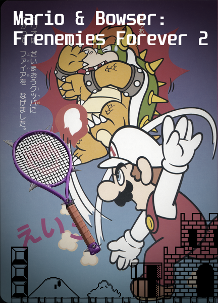

Expect a walkthrough/guide on Nintendo Adventure Book #4 Koopa Capers
The Mario Clash page, Nintendo Adventure Book #8: Flown the Koopa guide. Mario Character tier lists, Multi-platform Mario games and ports, Why Super Paper Mario is a 'true' Paper Mario game..Paper Mario Sticker Star: Dark Elements.
-Special articles: Sticker Star and Color Splash verses
-Why Super Paper Mario is a 'true' Paper Mario game (article)
-Importing editorials and articles from tumblr: Yoshis games analysis, Mario superstar baseball vs Super Sluggers, Oddities: Blooper's Ink, Oddities: Mario's ability to punch, Oddities: Yoshi's Safari.
Mario is Missing and Mario Discovery Series
Mario Multi-platform games, ports, and remakes
Super Mario World SNES/GBA comparison
Interesting Things in Super Mario 64's Manual
Mario Kart 7 Retrospective*Personal*
Paper Mario: Sticker Star, dark elements*Humor*
Why Super Paper Mario is a 'true' Paper Mario game
-List of Mario and gaming memorbilia (plain text)
-List of Games, systems, and more(plain text)
-List of Books and Mags (plain text)
-Link to Images Google Drive folder (WIP)
Mario and Bowser's New Frenemy Adventure Tropes (WIP) Original story is here
My inactive tumblr here, linked because some content here derive or were inspired from articles I originally posted there.
Nintendo Valiant comics list here.
Preview Upcoming Story: Mario and Bowser: Frenemies Forever 2 on FF.net. Click image.
Just a crazed Mario enthusiast. Loves Nintendo, computers and technology, reading and writing, music, and horology.
To quote CrossEyed7 of TheMushroomKingdom.net forum (describing the world of Mario)
...that was always the best part of PM and TTYD -- feeling like Mario's world is an actual place with actual people in it, hinting at all the interactions and issues and the details of day-to-day life in a world with sentient Goombas and Koopas and Bullet Bills.
Credits: Background image from Zega1234. Top photo: Super Mario Broth
This is a fansite, all assets used belong to their respective owners unless noted.